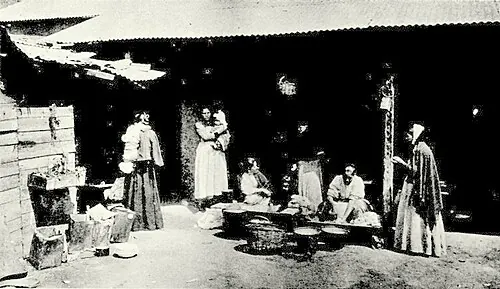

La cuestión social

Se llama cuestión social al conjunto de problemas que afectaron a los sectores populares entre fines del siglo XIX y comienzos del XX: hacinamiento en conventillos, epidemias, alta mortalidad infantil, alcoholismo, bajos salarios y ausencia de leyes laborales. Fue consecuencia de la migración del campo a la ciudad, del crecimiento de la minería y la industria, y de un Estado que intervenía poco en la vida social.
Las respuestas fueron diversas. Los trabajadores formaron sociedades de socorros mutuos, mancomunales y sociedades de resistencia, e impulsaron huelgas como la portuaria de Valparaíso (1903), la "huelga de la carne" en Santiago (1905) y la de la pampa que terminó en la Matanza de la Escuela Santa María de Iquique (1907). Luis Emilio Recabarren fundó en 1912 el Partido Obrero Socialista. Desde la Iglesia católica surgió el catolicismo social, y médicos e intelectuales, como Augusto Orrego Luco, denunciaron la situación.
El Estado respondió con represión y, con lentitud, con leyes como la de habitaciones obreras (1906), la ley de la silla (1914), la de accidentes del trabajo (1916) y las leyes sociales de 1924. Los historiadores discuten si estas reformas buscaron justicia social o contener el conflicto.
Versión para niños
Hace más de cien años, muchas familias llegaron del campo a ciudades como Santiago y Valparaíso, o a las salitreras del norte, buscando trabajo. Muchas vivían en conventillos: piezas pequeñas alrededor de un patio, sin agua potable ni baño propio. Había muchas enfermedades y muchos niños morían muy pequeños. Los trabajadores se organizaron para ayudarse y pedir mejores sueldos y condiciones. Uno de sus líderes fue Luis Emilio Recabarren. A estos problemas se les llamó la cuestión social.
Para maestros
Nivel sugerido: 1° medio
Objetivo: Comprender las causas y manifestaciones de la cuestión social y las respuestas de trabajadores, Iglesia, intelectuales y Estado. Las fechas (c. 1880–1920) son aproximadas porque se trata de un proceso y no de un hecho puntual; 1900 se usa como año de referencia.
Preguntas para la clase:
- ¿Qué problemas de la vida cotidiana formaban parte de la cuestión social?
- ¿Por qué los trabajadores decidieron organizarse y qué formas de organización crearon?
- ¿Qué derechos laborales que hoy existen fueron conquistas de esa época?
Actividad (20–30 min): Los estudiantes analizan fotografías de conventillos y un fragmento de prensa obrera de la época. Luego comparan esas condiciones con los derechos laborales actuales en un cuadro de dos columnas y comentan qué cambió y qué sigue pendiente.
Fuentes sugeridas: Memoria Chilena; Biblioteca Nacional Digital; Museo Histórico Nacional; Biblioteca del Congreso Nacional (BCN).
Objetivos de Aprendizaje (Currículum Nacional)
- 6° básico · HI06 OA 06 Caracterizar los principales aspectos que definieron el período de riqueza aportada por la explotación del salitre … el inicio de la "cuestión social"
- 1° medio · HI1M OA 18 Analizar las principales transformaciones de la sociedad en el cambio de siglo, considerando los factores que originaron la cuestión social
- 1° medio · HI1M OA 23 Explicar que los problemas de una sociedad generan distintas respuestas políticas, ejemplificando mediante las posturas que surgieron frente a la "cuestión social"
- 4° medio (Educación Ciudadana) · FG-ECIU-4M-OAC-04 Comprender la importancia de los derechos laborales en Chile … y los aportes de los movimientos y organizaciones sociales a su fortalecimiento
Personajes
Revisión humana pendiente. Cómo se revisa · Reportar un error
Cómo citar: Historia de Chile. (2026). La cuestión social. En Historia de Chile: atlas y línea de tiempo. https://moises-salgado.github.io/historia-de-chile/momento/la-cuestion-social.html